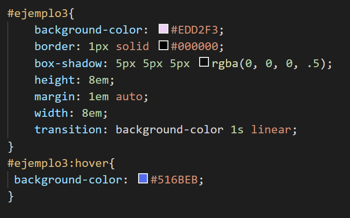

Color
Las transiciones en CSS nos permiten aplicar un cambio de color gradual a los elementos del documento HTML que hayamos coloreado desde nuestro CSS.
Para entenderlo mejor sitúa el ratón en el recuadro que tenemos debajo y observa cómo cambia su color.
En el ejemplo hemos hecho una transición desde CSS desde un color a otro con el metodo #selector:hover; dentro hemos especificado el color al que queremos llegar.
